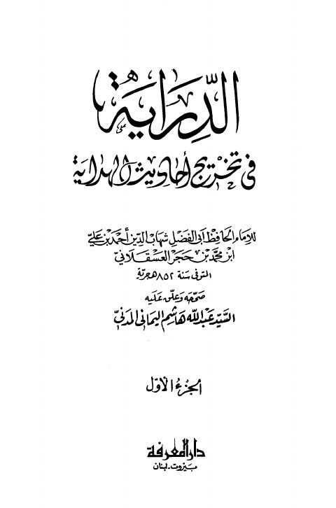

Downloads need an internet connection.
الدراية في تخريج أحاديث الهداية
Authors: أحمد بن علي بن حجر العسقلاني
Editors: عبد الله هاشم اليماني المدني
Publishers: دار المعرفة
**▫️ العنوان: الدراية في تخريج أحاديث الهداية** ▪️ المؤلف: #أحمد_بن_علي_بن_حجر_العسقلاني ▫️ المحقق: #عبد_الله_هاشم_اليماني_المدني ▪️ الناشر: #دار_المعرفة ▫️ بلد النشر: بيروت، #لبنان ▪️ الطبعة: 1 ▫️ عدد الأجزاء: 2 ▪️ الصفحات: 592 ▫️ نوع الوعاء: #كتاب ▪️ التصنيف الرئيسي: #الحديث_وعلومه ▫️ التصنيف الفرعي: #تخريج ۪